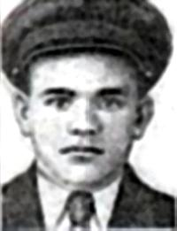

Константин Илларионович Поляков
20.02.1924 - 15.01.1943
20.02.1924 - 15.01.1943
Поляков Константин Илларионович
(20.02.1924 - 15.01.1943)
Звание
Гвардии Красноармеец
Место рождения
село Нижний Кисляй, Бобровский уезд, Воронежская губерния, РСФСР, СССР
Род войск
Пехота
Часть
130-й гвардейский стрелковый полк 44-й гвардейской стрелковой дивизии
Награды
Герой Советского Союза, Орден Ленина
Константин Илларионович Поляков — стрелок 130-го гвардейского стрелкового полка 44-й гвардейской стрелковой дивизии 6-го гвардейского стрелкового корпуса 1-й гвардейской армии Юго-Западного фронта, гвардии красноармеец. Герой Советского Союза.
Читать подробнее